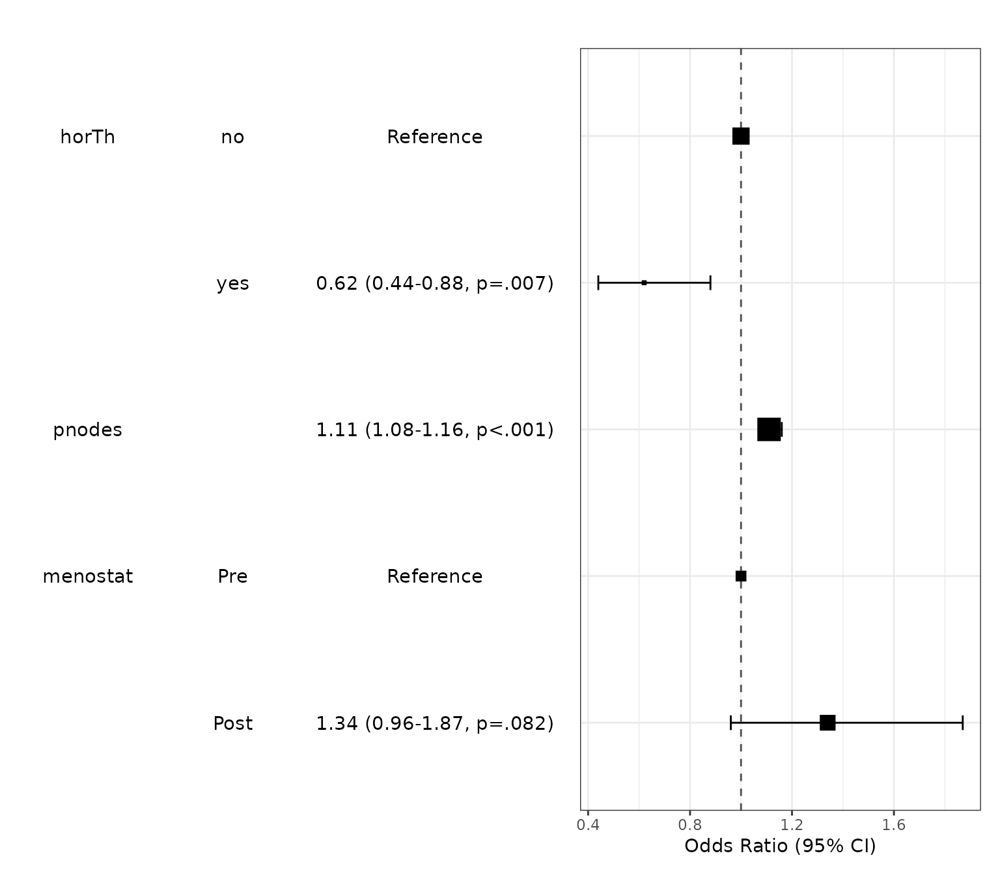
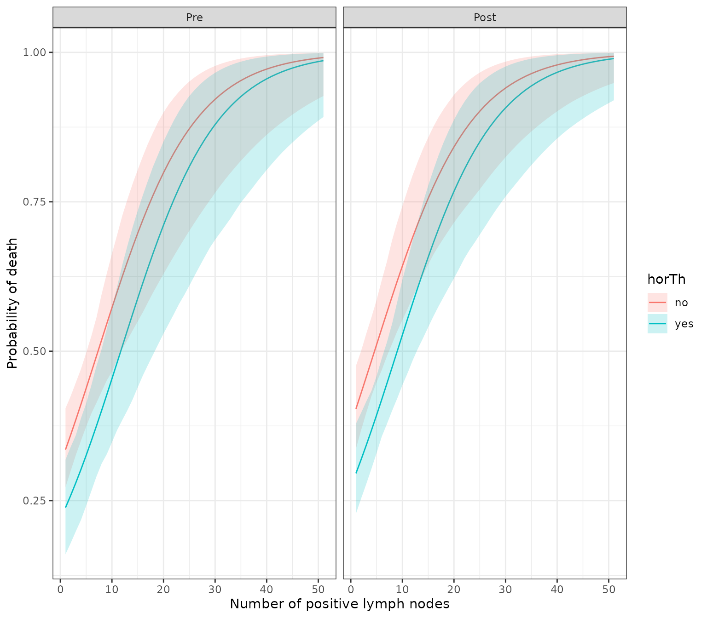

Bootstrap Simulation for model prediction
Source:vignettes/Bootstrap_Prediction.Rmd
Bootstrap_Prediction.RmdYou can make a bootstrap simulation for model prediction. When writing bootPredict function and this vignette, I was inspired from package finalfit by Ewen Harrison. For example, you can predict survival after diagnosis of breast cancer.
library(autoReg)
library(dplyr) # for use `%>%`
Attaching package: 'dplyr'
The following objects are masked from 'package:stats':
filter, lag
The following objects are masked from 'package:base':
intersect, setdiff, setequal, union
data(GBSG2,package="TH.data")
head(GBSG2)
horTh age menostat tsize tgrade pnodes progrec estrec time cens
1 no 70 Post 21 II 3 48 66 1814 1
2 yes 56 Post 12 II 7 61 77 2018 1
3 yes 58 Post 35 II 9 52 271 712 1
4 yes 59 Post 17 II 4 60 29 1807 1
5 no 73 Post 35 II 1 26 65 772 1
6 no 32 Pre 57 III 24 0 13 448 1Data GBGS2 in TH.data package is a data frame containing
the observations from the German Breast Cancer Study Group 2. In this
data, the survival status of patients is coded as 0 or 1 in the variable
cens. Whether the patient receive the hormonal therapy or
not is recorded as ‘no’ or ‘yes’ in variable horTh. The
number of positive lymph nodes are recoded in pnodes. You can make a
logistic regression model with the following R code.
GBSG2$cens.factor=factor(GBSG2$cens,labels=c("Alive","Died"))
fit=glm(cens.factor~horTh+pnodes+menostat,data=GBSG2,family="binomial")
summary(fit)
Call:
glm(formula = cens.factor ~ horTh + pnodes + menostat, family = "binomial",
data = GBSG2)
Coefficients:
Estimate Std. Error z value Pr(>|z|)
(Intercept) -0.79237 0.15183 -5.219 1.80e-07 ***
horThyes -0.47782 0.17578 -2.718 0.00656 **
pnodes 0.10853 0.01818 5.970 2.38e-09 ***
menostatPost 0.29375 0.16905 1.738 0.08228 .
---
Signif. codes: 0 '***' 0.001 '**' 0.01 '*' 0.05 '.' 0.1 ' ' 1
(Dispersion parameter for binomial family taken to be 1)
Null deviance: 939.68 on 685 degrees of freedom
Residual deviance: 887.36 on 682 degrees of freedom
AIC: 895.36
Number of Fisher Scoring iterations: 4You can make a publication-ready table with the following R command.
Dependent: cens.factor |
|
Alive (N=387) |
Died (N=299) |
OR (multivariable) |
|---|---|---|---|---|
horTh |
no |
235 (60.7%) |
205 (68.6%) |
|
yes |
152 (39.3%) |
94 (31.4%) |
0.62 (0.44-0.88, p=.007) |
|
pnodes |
Mean ± SD |
3.8 ± 4.6 |
6.5 ± 6.1 |
1.11 (1.08-1.16, p<.001) |
menostat |
Pre |
171 (44.2%) |
119 (39.8%) |
|
Post |
216 (55.8%) |
180 (60.2%) |
1.34 (0.96-1.87, p=.082) |
|
You can draw a plot summarizing the model.
modelPlot(fit)
Warning:
[1m
[22m`aes_string()` was deprecated in ggplot2 3.0.0.
[36mℹ
[39m Please use tidy evaluation idioms with `aes()`.
[36mℹ
[39m See also `vignette("ggplot2-in-packages")` for more information.
[36mℹ
[39m The deprecated feature was likely used in the
[34mautoReg
[39m package.
Please report the issue at
[3m
[34m<https://github.com/cardiomoon/autoReg/issues>
[39m
[23m.
[90mThis warning is displayed once per session.
[39m
[90mCall `lifecycle::last_lifecycle_warnings()` to see where this warning was
[39m
[90mgenerated.
[39m
For bootstrapping simulation, you can make new data with the following R code.
newdata=expand.grid(horTh=factor(c(1,2),labels=c("no","yes")),
pnodes=1:51,
menostat=factor(c(1,2),labels=c("Pre","Post")))You can make a bootstrapping simulation with bootPredict() function. You can set the number of simulation by adjusting R argument.
df=bootPredict(fit,newdata,R=500)
head(df)
horTh pnodes menostat estimate lower upper
1 no 1 Pre 0.3354033 0.2724279 0.4046308
2 yes 1 Pre 0.2383652 0.1603463 0.3184490
3 no 2 Pre 0.3600105 0.2997684 0.4247951
4 yes 2 Pre 0.2586235 0.1789604 0.3398288
5 no 3 Pre 0.3853762 0.3262596 0.4475414
6 yes 3 Pre 0.2799707 0.1986792 0.3594128With this result, you can draw a plot showing bootstrapping prediction of breast cancer.
library(ggplot2)
ggplot(df,aes(x=pnodes,y=estimate))+
geom_line(aes(color=horTh))+
geom_ribbon(aes(ymin=lower,ymax=upper,fill=horTh),alpha=0.2)+
facet_wrap(~menostat)+
theme_bw()+
labs(x="Number of positive lymph nodes", y="Probability of death")